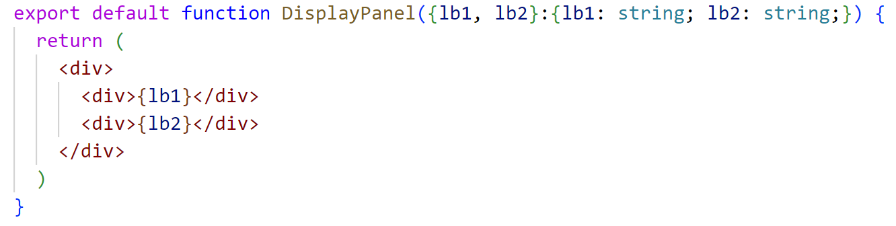
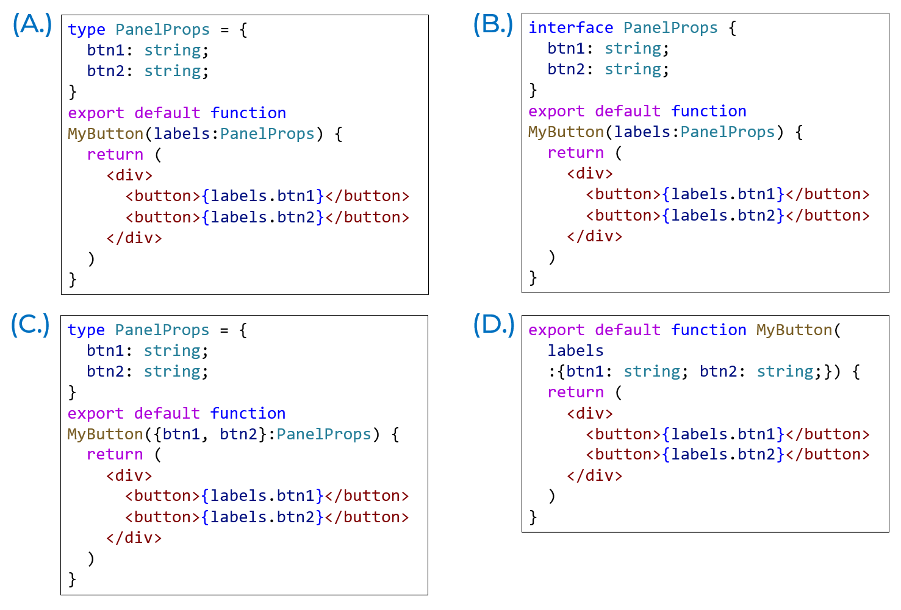
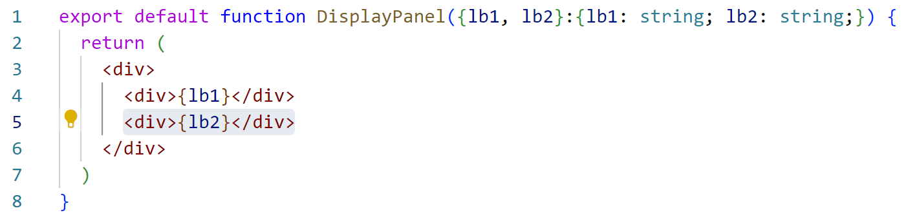
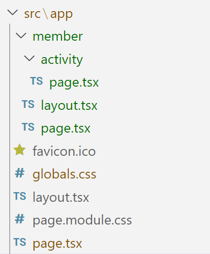

Quiz 04: Props, Page, Layout
Instruction
จงเลือกคำตอบที่ถูกที่สุด
- มีเวลาทำข้อสอบ 10 นาที
My Work
- 1
พิจารณา Component ที่มีการรับ props เข้ามาใช้งาน ข้อใดต่อไปนี้ แสดงรูปแบบที่ไม่ถูกต้องสำหรับการส่ง props ไปยัง component ดังกล่าว

1 point - 2
รูปแบบการรับ props และนำไปใช้งานของ component ใดต่อไปนี้ เป็นรูปแบบที่ผิด

1 point - 3
พิจารณา Component ที่มีการรับ props เข้ามาใช้งาน หากเราต้องการส่งค่าใน lb2 ต่อไปเป็น id ให้กับ <div> element ในบรรทัดที่ 5 เราสามารถส่งได้ในรูปแบบตามข้อใดต่อไปนี้

1 point - 4
ข้อใดต่อไปนี้กล่าวผิดเกี่ยวกับ RootLayout ใน Next.js
1 point - 5
ข้อใดต่อไปนี้กล่าวผิด เกี่ยวกับการรับ prop ที่จะนำมาใช้เป็น children component (children prop) ของ Layout component ใน Next.js
1 point - 6
ใน การสร้าง Web Application ด้วย Next.js เพื่อนำไปขึ้นใช้งานที่โดเมน www.myshop.com แล้ว Page Component ที่ path app\member\activity\page.tsx จะถูก render มาแสดงต่อผู้ใช้ เมื่อผู้ใช้ navigate ไปที่ route ใด

1 point - 7
ใน การสร้าง Web Application ด้วย Next.js เพื่อนำไปขึ้นใช้งานที่โดเมน www.myshop.com แล้ว Layout Component ที่ path app\member\layout.tsx จะถูก render มาแสดงต่อผู้ใช้ เมื่อผู้ใช้ navigate ไปที่ route ใดบ้าง
 1 point
1 point - 8
ใน การติดตั้ง Tailwind CSS ใช้งานใน Next.js เราต้องเพิ่ม path ไปยังไฟล์ต่าง ๆ ที่จะใช้ CSS Class ของ Tailwind โดยการระบุไว้ในไฟล์ใด
1 point - 9
เมื่อ ต้องการเพิ่ม base style ของ Tailwind เข้าไปใช้งานใน Next.js application เพื่อให้สามารถใช้งาน base style ดังกล่าวได้ทั่วทั้ง application เราควรตั้งค่าอย่างไร
1 point - 10
ข้อใดต่อไปนี้กล่าวผิดเกี่ยวกับการใช้งาน style จาก Tailwind CSS
1 point